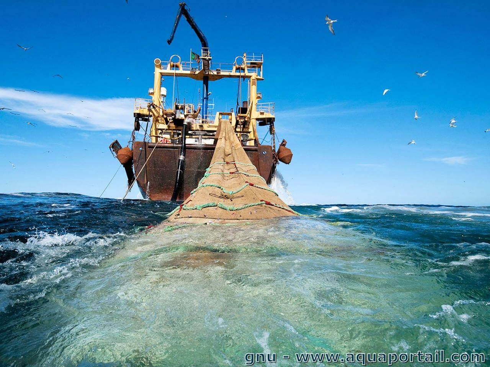

La surpêche est la pêche excessive (légale ou illégale) ou pêche destructive de la ressource pratiquée par l'homme sur certains poissons, crustacés ou mollusques. C'est un phénoméne observé dans presque toutes les pêcheries de la planète, qui préoccupe la FAO et l'ONU car menaçant la sécurité alimentaire et les équilibres écologiques marins En 2014 selon la FAO,
chaque humain consomme en moyenne plus de 20kg/an de poisson. Cette
augmentation de la consommation qui était de l’ordre de 6kg/an en 1950 et de
12kg/an en 1980 a beaucoup augmenté mettant la pression sur l'eeexploitation des ressources halieutiques.
Ce graphique montre la proportion de la surexploitation des ressources halieeutiques. La proportion est obtenue de la pourcentage de poissons exploités. Donc on estime que à peu prés 9% des poissons étaient surexploités en 1978. Elle a augmenté jusqu'en 2015 avec 66% de poissons exploités donc 33,10% surexploités. En effet la forte demande a accentué ce fléau. On assiste ainsi à une forte exploitation des ressources, la disparité des ressources, la baisse du taux de production etc...
Source : Seafood Production - Our World in Data.
Source: fleet_&_employment.pdf (fao.org).
CONCLUSION
la surpéche a des bénéfices sur l'économie des pays mais les pays en développement . Mais elle affecte négativement l'environnement mais surtout les populations vulnérables. Les conséquences pour l’homme ne s’avèrent pas
moins dramatiques. En Afrique et en Asie, plus d’un milliard de personnes
dépendent de la pêche comme première ressource alimentaire, en particulier dans
les pays à faibles revenus. Lorsque les quantités de poissons prises baissent,
les prix augmentent, ce qui rend plus difficile l’accessibilité de cette denrée
essentielle aux populations les plus pauvres et accroît donc leur vulnérabilité
created with
Website Builder Software .